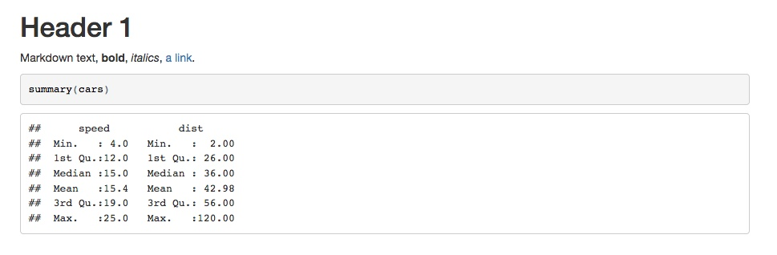
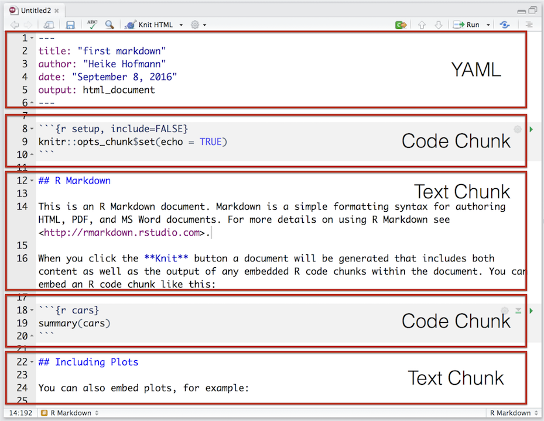
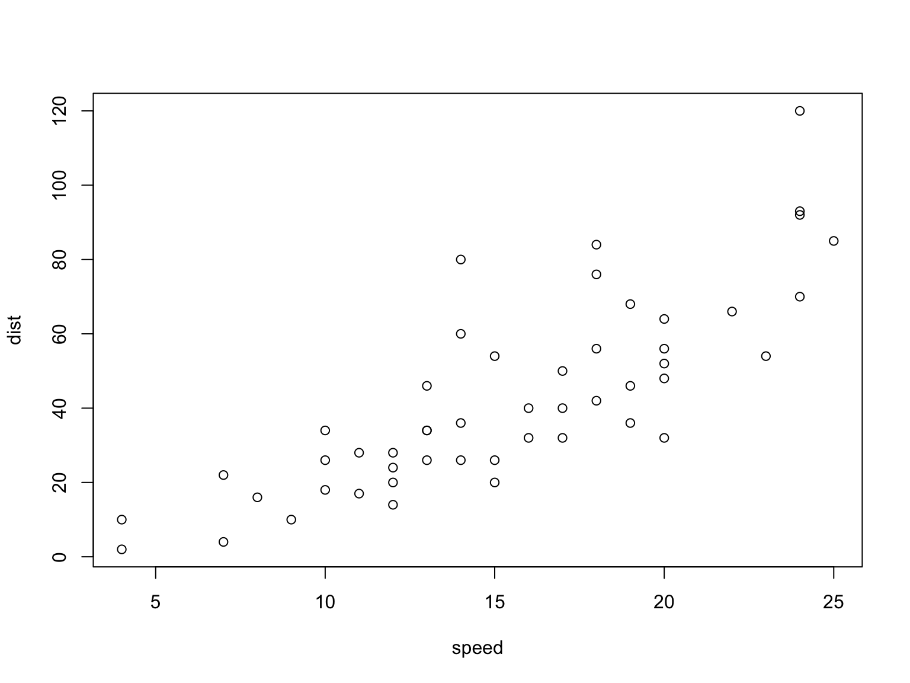
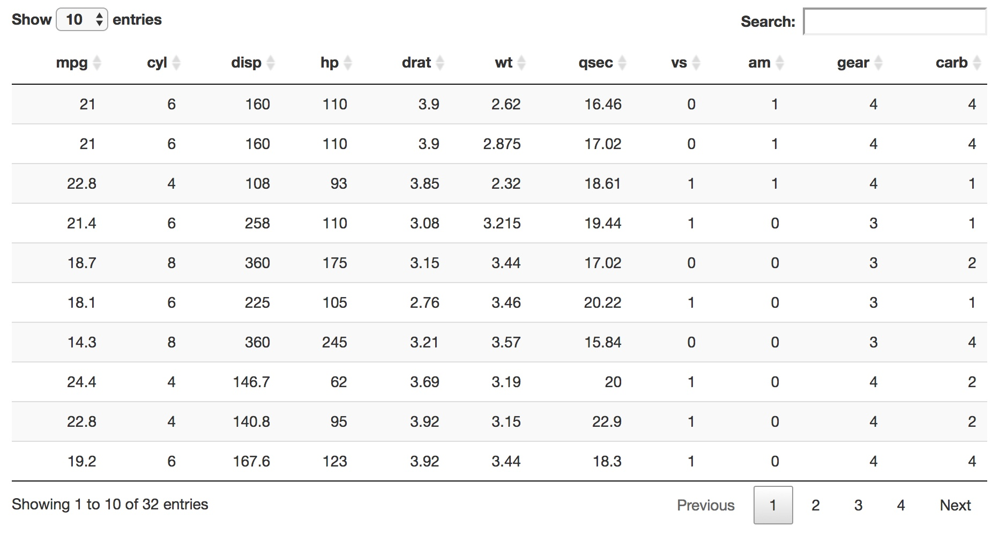

R Markdown
What is
R Markdown?
Why?
Reproducible Workflows
Version Control
Multiple Versions

Easy for you and your Audience

Multiple Audiences
Kindness to Future Self

How does it work?

Source: R Markdown Website
R Markdown
---
output:
html_document:
keep_md: true
---
# Header 1
Markdown text, **bold**, *italics*,
[a link](http://google.com).
```{r}
summary(cars)
```
Markdown
# Header 1 Markdown text, **bold**, *italics*, [a link](http://google.com). ```r summary(cars) ``` ``` ## speed dist ## Min. : 4.0 Min. : 2.00 ## 1st Qu.:12.0 1st Qu.: 26.00 ## Median :15.0 Median : 36.00 ## Mean :15.4 Mean : 42.98 ## 3rd Qu.:19.0 3rd Qu.: 56.00 ## Max. :25.0 Max. :120.00 ```
HTML Code
<h1>Header 1</h1> <p>Markdown text, <strong>bold</strong>, <em>italics</em>, <a href="http://google.com">a link</a>.</p> <pre class="r"><code>summary(cars)</code></pre> <pre><code>## speed dist ## Min. : 4.0 Min. : 2.00 ## 1st Qu.:12.0 1st Qu.: 26.00 ## Median :15.0 Median : 36.00 ## Mean :15.4 Mean : 42.98 ## 3rd Qu.:19.0 3rd Qu.: 56.00 ## Max. :25.0 Max. :120.00</code></pre> </div>
Header 1
Markdown text, bold, italics, a link.
summary(cars)## speed dist
## Min. : 4.0 Min. : 2.00
## 1st Qu.:12.0 1st Qu.: 26.00
## Median :15.0 Median : 36.00
## Mean :15.4 Mean : 42.98
## 3rd Qu.:19.0 3rd Qu.: 56.00
## Max. :25.0 Max. :120.00
Compilation Options
RStudio Knit Button
rmarkdown::render()

Source: Heike Hofman
YAML Header
Spacing matters
Look up the options: R Markdown Formats
Text Chunks: Markdown
# Header 1
## Header 2
### Header 3
*Italics*
**Bold**
[link text](http://google.com)
![caption][images/image.png]
- List Item 1
- List Item 2
- Item 2a
- Item 2b
1. Numbered list item 1
1. Numbered list item 2
Source: Heike Hofman
Options chunk
```{r setup, include=FALSE}
knitr::opts_chunk$set(echo = TRUE)
```
R chunks
```{r chunkname}
a<-2
a + 1
a<-3
a + 2
```
a<-2
a + 1## [1] 3a<-3
a + 2## [1] 5Plot
```{r, fig.width=8, echo=FALSE}
plot(cars)
```

Pretty Output with knitr::kable
head(mtcars)## mpg cyl disp hp drat wt
## Mazda RX4 21.0 6 160 110 3.90 2.620
## Mazda RX4 Wag 21.0 6 160 110 3.90 2.875
## Datsun 710 22.8 4 108 93 3.85 2.320
## Hornet 4 Drive 21.4 6 258 110 3.08 3.215
## Hornet Sportabout 18.7 8 360 175 3.15 3.440
## Valiant 18.1 6 225 105 2.76 3.460
## qsec vs am gear carb
## Mazda RX4 16.46 0 1 4 4
## Mazda RX4 Wag 17.02 0 1 4 4
## Datsun 710 18.61 1 1 4 1
## Hornet 4 Drive 19.44 1 0 3 1
## Hornet Sportabout 17.02 0 0 3 2
## Valiant 20.22 1 0 3 1
```{r, results='asis'}
library(knitr)
kable(head(cars))
```
| mpg | cyl | disp | hp | drat | wt | qsec | vs | am | gear | carb | |
|---|---|---|---|---|---|---|---|---|---|---|---|
| Mazda RX4 | 21.0 | 6 | 160 | 110 | 3.90 | 2.620 | 16.46 | 0 | 1 | 4 | 4 |
| Mazda RX4 Wag | 21.0 | 6 | 160 | 110 | 3.90 | 2.875 | 17.02 | 0 | 1 | 4 | 4 |
| Datsun 710 | 22.8 | 4 | 108 | 93 | 3.85 | 2.320 | 18.61 | 1 | 1 | 4 | 1 |
| Hornet 4 Drive | 21.4 | 6 | 258 | 110 | 3.08 | 3.215 | 19.44 | 1 | 0 | 3 | 1 |
| Hornet Sportabout | 18.7 | 8 | 360 | 175 | 3.15 | 3.440 | 17.02 | 0 | 0 | 3 | 2 |
| Valiant | 18.1 | 6 | 225 | 105 | 2.76 | 3.460 | 20.22 | 1 | 0 | 3 | 1 |
summary(lm(mpg ~ hp + disp, data=mtcars))##
## Call:
## lm(formula = mpg ~ hp + disp, data = mtcars)
##
## Residuals:
## Min 1Q Median 3Q Max
## -4.7945 -2.3036 -0.8246 1.8582 6.9363
##
## Coefficients:
## Estimate Std. Error t value Pr(>|t|)
## (Intercept) 30.735904 1.331566 23.083 < 2e-16
## hp -0.024840 0.013385 -1.856 0.073679
## disp -0.030346 0.007405 -4.098 0.000306
##
## (Intercept) ***
## hp .
## disp ***
## ---
## Signif. codes:
## 0 '***' 0.001 '**' 0.01 '*' 0.05 '.' 0.1 ' ' 1
##
## Residual standard error: 3.127 on 29 degrees of freedom
## Multiple R-squared: 0.7482, Adjusted R-squared: 0.7309
## F-statistic: 43.09 on 2 and 29 DF, p-value: 2.062e-09
```{r, results='asis'}
reg1 <- lm(mpg ~ hp + disp, data=mtcars)
kable(summary(reg1)$coef, digits=2)
```
| Estimate | Std. Error | t value | Pr(>|t|) | |
|---|---|---|---|---|
| (Intercept) | 30.74 | 1.33 | 23.08 | 0.00 |
| hp | -0.02 | 0.01 | -1.86 | 0.07 |
| disp | -0.03 | 0.01 | -4.10 | 0.00 |
Interactive Output
DT::datatable
```{r, echo=FALSE}
library(DT)
datatable(mtcars, rownames = FALSE)
```


When not to use R Markdown